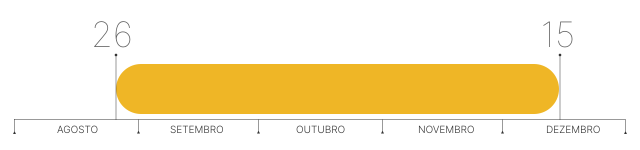
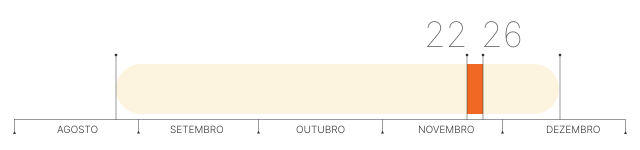

PANORAMA GERAL | Período do Teste Público de Segurança
ETAPA DE PREPARAÇÃO | Pré-incrições
ETAPA DE PREPARAÇÃO | Pré-incritos inspecionam códigos-fonte

ETAPA DE PREPARAÇÃO | Escolha dos pré-inscritos aprovados
ETAPA DE REALIZAÇÃO | Urnas e sistema eleitoral sob ataque
ETAPA DE AVALIAÇÃO | Sistematização das melhorias a serem feitas
URGENTE: Urnas eletrônicas sob ataque
Saiba por que, apesar de verdadeiro, esse alerta não coloca em xeque as eleições desse ano
Em 2021, ocorreu o ataque mais recente às urnas eletrônicas. Antes dele, elas foram violadas em 2019, 2017, 2016, 2012 e 2009. Nessas 6 ocasiões, tanto a estrutura física da urna, quanto programas que operam dentro dela, foram deliberadamente atacados, com o consentimento do Tribunal Superior Eleitoral (TSE).
O órgão, responsável pelo processo eleitoral brasileiro, promove o Teste Público de Segurança (TPS) para detectar brechas e fragilidades no sistema eletrônico eleitoral. Role a página para saber mais sobre a última edição do TPS.
A 6ª edição do Teste Público de Segurança teve início no dia 26 de agosto de 2021 e foi finalizada no dia 15 de dezembro do mesmo ano. Ao longo desses 112 dias, ocorreram as três etapas do teste: a preparação, a realização e a avaliação.
De 26/08 a 5/10 foi quando ocorreram as pré-inscrições por parte das pessoas* interessadas em testar a urna eletrônica e a publicação das candidaturas aprovadas. Em 2021, houve 39 pré-inscritos e todos eles foram autorizados a participar do evento. Destes, 16 fizeram inscrição individual e 23 em grupo.
*O critério para participar do TPS é ser cidadão brasileiro maior de 18 anos.
De 11/10 a 22/10, as pessoas que tiveram a pré-inscrição aprovada compareceram na sede do Tribunal Superior Eleitoral em Brasília para inspecionar códigos-fonte de programas utilizados nas eleições. A partir dessa inspeção, elas tiveram até o dia 25/10 para enviar um Plano de Teste. Nele, os pré-candidatos descreveram quais componentes internos e externos da urna e do sistema eletrônico de votação pretendiam investigar.
No dia 26/10 saiu o resultado: 10 investigadores individuais e 5 grupos tiveram os Planos de Teste aprovados. Ao todo, 29 planos foram pré-selecionados. No dia 05/11 ocorreu um sorteio público para a seleção de inscrições e a publicação da lista de contemplados. Passado o período de recurso, o número definitivo de participantes foi divulgado no dia 9/11*. De 10/11 a 16/11, ocorreu a requisição de diárias e passagens.
De 22/11 a 26/11 foi realizado o Teste Público de Segurança. Na sede do Tribunal Superior Eleitoral (TSE), em Brasília, os planos de teste selecionados na etapa de preparação foram colocados em prática. No dia 26/11 ocorreu a divulgação preliminar dos resultados do Teste Público de Segurança e entrega dos certificados de participação.
No dia 15/12, a Comissão Avaliadora do TSE divulgou o relatório com os resultados do Teste Público de Segurança (TPS).
Mais recentemente, em maio de 2022, as pessoas que participaram do Teste Público de Segurança retornaram ao TSE para o Teste de Confirmação, no qual atacaram novamente a urna e os sistemas. Ao final, nenhum dos grupos obteve sucesso que comprometesse a violação da integridade ou o sigilo dos votos em uma eleição.